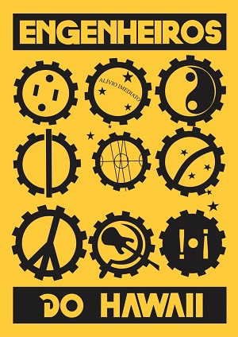

Posts #1 Engenheiros do Hawaii

Outras frequências
Engenheiros do Hawaii
Seria mais fácil fazer como todo mundo faz
O caminho mais curto, produto que rende mais
Seria mais fácil fazer como todo mundo faz
Um tiro certeiro, modelo que vende mais
Mas nós dançamos no silêncio
Choramos no carnaval
Não vemos graça nas gracinhas da TV
Morremos de rir no horário eleitoral
Seria mais fácil fazer como todo mundo faz
Sem sair do sofá, deixar a Ferrari pra trás
Seria mais fácil, como todo mundo faz
O milésimo gol sentado na mesa de um bar
Mas nós vibramos em outra frequência
Sabemos que não é bem assim
Se fosse fácil achar o caminho das pedras
Tantas pedras no caminho não seria ruim